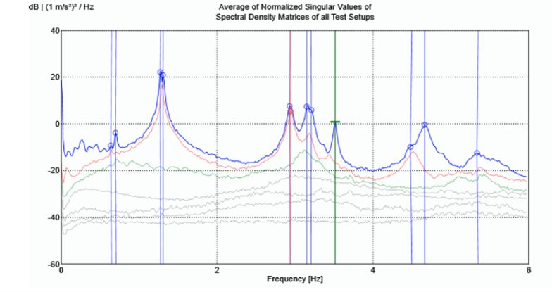

Aerogeneradores con problemas de cimentación
- Reto
- En un parque de más de 80 aerogeneradores, dos turbinas (torres de acero de unos 60 m) mostraban vibraciones anómalas y desplazamientos excesivos entre torre y cimentación.
- Qué hicimos
- Análisis modal operacional antes y después de la reparación y refuerzo de las cimentaciones, con una turbina sana como referencia: 12 sensores (10 V/g y 1 V/g) y modelo FEM en ABAQUS.
- Resultado
- Evaluación de la eficacia del refuerzo mediante la comparación de frecuencias naturales y amortiguamientos, y de la cercanía de la primera frecuencia propia a la excitación 1P del rotor.